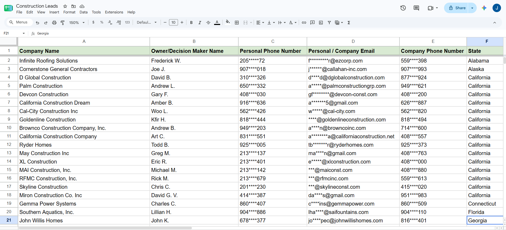
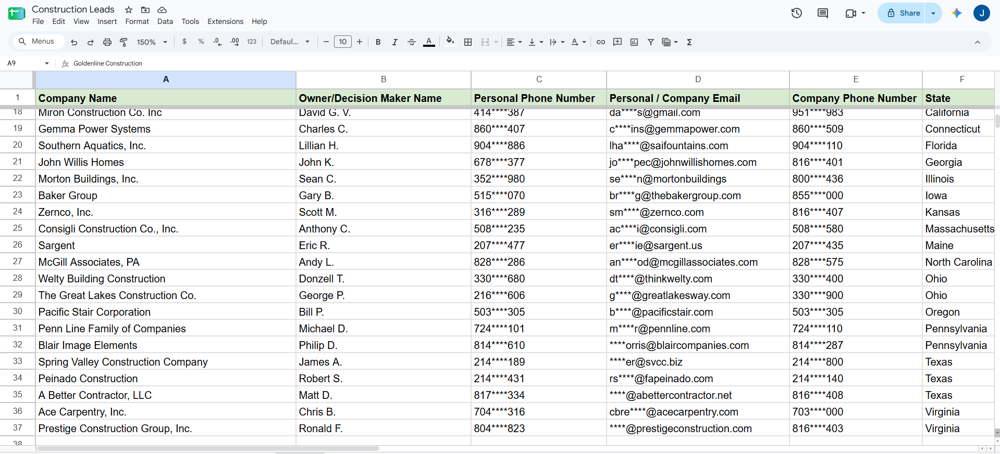
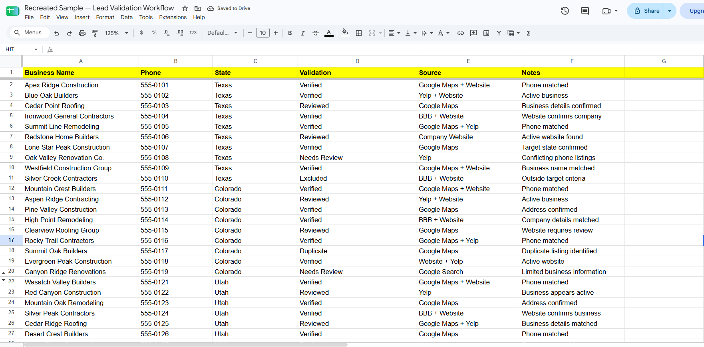

I help businesses build targeted lead lists, research prospects, validate data, and support B2B outreach through structured, reliable research.
Lead Research VA
From finding the right companies to validating the right contacts, I turn broad target markets into organized, outreach-ready prospect lists.
Build targeted B2B lead lists based on industry, location, company criteria, and ideal customer profiles.
Research target companies, identify relevant decision-makers, and gather accurate business information for outreach.
Cross-check business and contact information to keep prospect databases accurate, complete, and organized.
Find and validate professional contact information to support targeted outreach campaigns.
Research companies and decision-makers using LinkedIn and other relevant sources.
Support outbound campaigns through prospect research, list preparation, personalization, and follow-up tracking.
Help move qualified prospects toward discovery calls through outreach, follow-ups, and scheduling coordination.
Clean, format, organize, and maintain spreadsheets and business datasets.
A structured process helps keep research consistent, organized, and easier to use.
Define the target market, industry, location, and research criteria.
Find relevant companies that match the target criteria.
Identify owners, founders, hiring managers, and other key decision-makers.
Cross-check company and contact information using multiple sources.
Clean, deduplicate, and structure the data into an outreach-ready list.
Provide accurate, organized leads ready for outreach or sales follow-up.
These portfolio samples show how I research target companies, identify relevant contacts, validate information, and build organized prospect lists for outreach.

Researched construction businesses and identified owners and decision-makers, organizing company, contact, and location data into a structured lead database.
Build a targeted database of construction businesses across selected U.S. markets and organize relevant business and decision-maker information for outreach.
Company Name · Owner / Decision Maker · Phone · Email · Company Phone · State
Research → Identify → Validate → Organize → Deduplicate → Quality Check

Contact information has been redacted for privacy and confidentiality.

Researched and validated large business datasets using multiple online sources, cross-checking company details, phone numbers, locations, and other criteria to produce clean, organized lead lists.
Building large business datasets while maintaining consistent formatting, location checks, deduplication, and quality control.
Cross-checking business information using websites, directories, social profiles, and multiple research sources.
Lead Research VA · Lead Generation · Prospect Research · Data Support
I'm a Lead Research VA with 2+ years of experience in business research, lead generation, prospect research, and data validation.
I research target companies, identify relevant decision-makers, verify business information, and organize large datasets into clean, structured lead lists for outreach.
I enjoy turning a broad target market into clear, usable data — so sales and outreach teams can spend less time researching and more time connecting with the right prospects.
My experience includes researching companies across different industries and locations, identifying relevant prospects and decision-makers, validating business information, and organizing large datasets for sales and outreach teams.
I'm now bringing that experience into freelancing, where I help businesses turn their target market into structured, actionable lead lists.
I like turning "Can you find these companies?" into a clean spreadsheet that actually makes sense.
Looking for help with lead generation, research, data validation, or outreach support? Let's talk about what you need.
Let's Work Together →